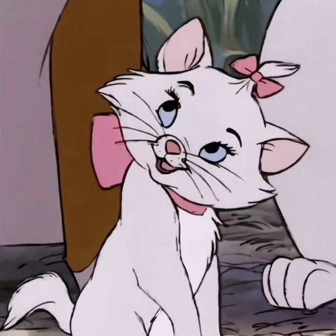

 Мари -маленький белый чистокровный турецкий Ангорский котенок. У нее длинная белая шерсть и ярко-голубые глаза с длинными ресницами; из трех котят она больше всего похожа на свою мать. Ее нос и подушечки лап светло-розовые, и у нее есть 3 или 4 усы по обе стороны ее лица. Мари носит большой розовый бант на шее и еще один розовый бант, который меньше, украшая пучок меха на голове.
Мари считает себя настоящей маленькой леди и поэтому старается подражать элегантности и приличиям своей матери, Герцогини. В результате она может быть несколько чопорной и избалованной. Хотя Мари делает усилие, чтобы казаться леди, она действительно наслаждается случайным падением со своими любимыми братьями и имеет ненасытное любопытство, как только Томас О'Мэлли открывает глаза на чудеса Парижа.
Безнадежный романтик и мечтатель, Мари часто теряется в своих мыслях и глубоко вздыхает. Она также, кажется, несколько подвержена опасности, поскольку она постоянно попадает в неприятности. Это может быть потому, что либо её голова витает в облаках, либо потому, что она котёнок, у которого было меньше всего практики "кусаться и царапаться", и, таким образом, она меньше всего способна заботиться о себе в дикой природе.